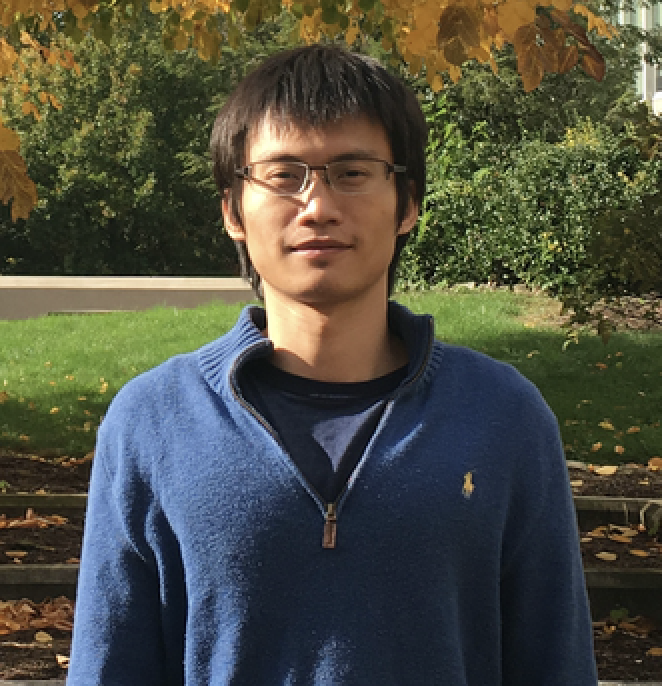

Home / Research / Group / Teaching

Daren Wang
Assistant Professor
Department of ACMS
University of Notre Dame
Office: 101H Crowley Hall
Email: dwang24 AT nd DOT edu
Google Scholar
About
I am an Assistant Professor of Statistics in the Department of ACMS at the University of Notre Dame. Previously, from 2018 to 2021, I was a Postdoc in the Department of Statistics at the University of Chicago under the supervision of Prof. Rebecca Willett. Before that, I completed my Ph.D. in statistics at Carnegie Mellon University in 2018 under the supervision of Prof. Alessandro Rinaldo and Prof. Christopher Genovese.